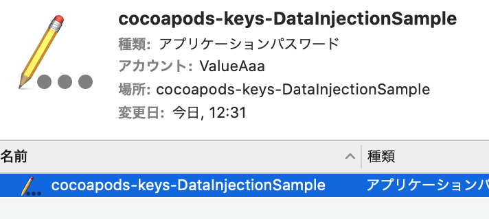
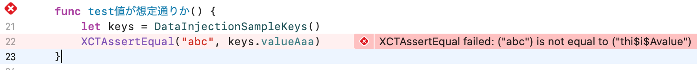
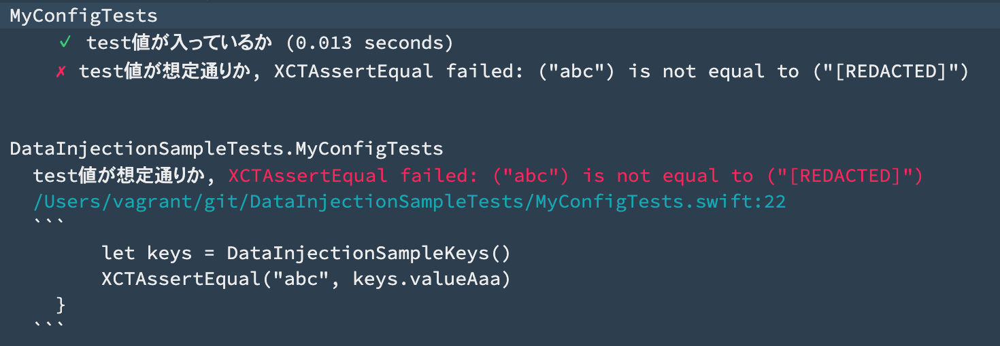

cocoapods-keysでiOSアプリに値を埋め込む
iOSのプロジェクトで、「アプリ内では定数として扱いたいけど、ソースコードのように見える形でリポジトリに含めたくない」みたいな要件があって、 cocoapods-keys を使えば解決できるのではないか？ということで調べてみました。
まずはローカルで実行してみる
iOSプロジェクトを作る
これはすでに存在する前提ですすめます。
cocoapods-keysをインストールする
Cocoapodsのプラグインなので、本体と合わせて入れておきます。
$ gem install cocoapods
$ gem install cocoapods-keys
値を注入する
Podfile に定数にしたい名前を書くと、 pod install で値の入力を求められます。今回は thi$i$Avalue としました。
$ tail -n 8 Podfile
plugin 'cocoapods-keys', {
:project => "DataInjectionSample",
:keys => [
"ValueAaa",
]
}
$ pod install
CocoaPods-Keys has detected a keys mismatch for your setup.
What is the key for ValueAaa
> thi$i$Avalue
Saved ValueAaa to DataInjectionSample.
Keychainにも登録されました。

コードを書いてためしてみましたが、ちゃんと入っていそうです。

ここで、gitignoreは githubのSwiftのやつ を使っているので Pods ディレクトリはリポジトリに含めるようになっていますが、今回自動生成されたobjcのファイルはプロジェクトに含めないようにしておきました。
# Pods/
Pods/CocoaPodsKeys
Bitriseのワークフローで値を注入する
ここまでやったのをBitriseでも実行できるようにします。
ワークフローに Install cocoapod keys を追加します。今回はPodfileが含まれるプロジェクトだったからか Run CocoaPods install のステップは自動で追加されいていました。
普通にステップの設定で値を書いてしまうと、最初に隠したかったはずの値がビルドログやらbitrise.ymlやらから丸見えになってしまうので、Secretsで定義してワークフロー側からはそれを参照するようにしました。
試しにテストを失敗させてみて、ビルドログ上で値が伏せられているところも確認できました。

まとめ
cocoapods-keys を使うと、ソースコード中にハードコードしなくても、ビルド時に定数値の導入をすることができました。自動生成されたコードにはなにかしら入っているのでそれは非公開にしておいたほうがいいようです。